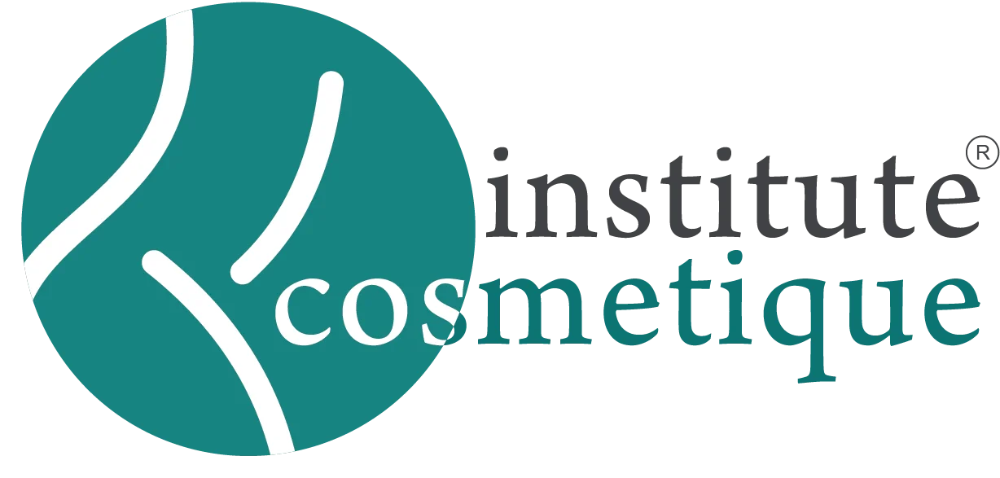

macOS Menu Rethink
Improved accessibility for screen reader + keyboard users.
Cosmetique Dermatology
Fresh brand strategy and web redesign for a Dermatology clinic in Pakistan.

Microwave Redesign
End-to-end UX from wireframe to high-fidelity prototype.

Miyagi Labs
UX overhaul from wireframes to research-backed iteration.